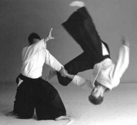
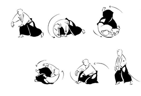

|
УДК 376.32
|
Петров С.А.,
магистрант Саратовского государственного
национального исследовательского
университета им. Н.Г. Чернышевского
г. Саратов, Россия
|
АЙКИДО ДЛЯ ДЕТЕЙ С ОВЗ
(НА ПРИМЕРЕ РАБОТЫ С ДЕТЬМИ С ПАТОЛОГИЕЙ ЗРЕНИЯ)
|
|
Проблема гиподинамии у детей крайне актуальна. В учебных
программах обычного и профессионального образования количества
учебных занятий по физической культуре явно недостаточно для
компенсации дефицита двигательной активности. Один из вариантов
решения проблемы - регулярное посещение спортивных секций, в
частности, секций различных боевых искусств. Один из популярных
видов боевых искусств - айкидо.
|

Бросок в айкидо
|
Айкидо – традиционное японское боевое искусство, для которого
характерны следующие особенности:
-
отсутствие соревновательной деятельности;
-
ярко выраженная оборонительная направленность;
-
бросковая техника, техника удержания и фиксации с
воздействием на суставы рук, не требующая больших
физических усилий;
-
отлично проработанная методология обучения
атравматичным падениям;
-
обязательное наличие, в явном или скрытом виде, методов
дыхательной гимнастики и медитации;
-
декларируемая цель занятий – самосовершенствование
через практику.
|
|
Отдельно следует подчеркнуть, что существует огромное число
школ айкидо с различными акцентами в тренировочном процессе:
от углубленных методов дыхания и регулярных практик медитации
до изучения достаточно жестких методов нейтрализации противника,
используемых в работе армии и полиции. Основная масса школ
айкидо находится между этими крайностями.
|
|
В рамках инклюзивных процессов, проходящих в российском
образовании, появление в группе айкидо ребенка с ОВЗ (особые
возможности здоровья) всего лишь вопрос времени. При появлении
такого ребенка в группе требуется изменение методики преподавания
с учетом особенностей его здоровья и восприятия.
|
|
В 2016 Федерация Айкидо Айкикай Саратовской области и ГБОУ СО
"Школа-интернат АОП №3 г. Саратова" начали осуществление
проекта - айкидо для слепых и слабовидящих. За это время при
консультациях офтальмологов, педагогов школы и инструкторов
федерации разработаны общие рекомендации для ведения
тренировок с детьми с патологией зрения.
|
|
Как тестовая ,сейчас работает группа айкидо для учащихся 7-9
классов. Все занимающиеся имеют 3 и 4 специальную группу по
физкультуре. С учетом специализации школы это серьезные
патологии зрения различной этиологии. При работе с такими
детьми основная задача - это найти компромисс между допустимыми
нагрузками при занятиях айкидо и провоцированием ухудшения зрения.
|
Допуск к занятиям айкидо детей с ОВЗ
|
С точки зрения спортивной классификации айкидо можно отнести
к видам борьбы, аналогичным дзюдо, самбо, греко-римской
борьбы, т.к. формально присутствует бросковая техника.
Соответственно требованиям:
-
«Перечня медицинских противопоказаний к приему
абитуриентов в высшие и средние физкультурные
учебные заведения» [1].
-
«Перечня заболеваний, препятствующих отбору для
поступления в общеобразовательные школы спортивного
профиля, ДЮСШ, центры подготовки резервов большого
спорта» [2].
|
|
Все без исключения дети с патологией зрения, имеющие 3-4
группы допуска к занятиям физической культурой, не имеют
возможности заниматься айкидо. И это, несомненно, правильно,
если говорить о полном цикле занятий, включающем в себя все
технические действия, используемые в айкидо. Но отсутствие
соревнований позволяет гибко менять методику преподавания,
исключая из спектра разучиваемых действий потенциально опасные.
|
|
Для изменения методики преподавания были проанализированы
основные факторы риска и определены механизмы их минимизации
при занятиях айкидо.
|
Факторы, приводящие к ухудшению состояния зрительного
анализатора, при физической нагрузке:
-
нарушение кровообращения (ишемические явления);
-
ударные нагрузки при резких угловых и линейных перемещениях;
-
изменение давления под нагрузкой.
|
Нагрузка и ЧСС (частота сердечных сокращений)
|
|
Все перечисленные факторы взаимосвязаны. Ряд работ по влиянию
занятий физической культурой на состояние зрительного
анализатора показали, что полный отказ от физической нагрузки
приводит к ухудшению состояния здоровья вообще и зрения в
частности, подтверждая тезис: «движение – это жизнь».
А регулярная нагрузка, при которой ЧСС не превышает 100-130
уд/мин и отсутствуют резкие изменения положения тела (удары,
падения), способствует улучшению общего состояния здоровья [3].
|
|
Таким образом, количество повторений и интенсивность исполнения
технических элементов должны быть ограничены величинами,
при которых ЧСС не превышает величин 100-130 уд/мин, т.е. в
зоне низкой интенсивности. А контроль ЧСС должен стать одним
из постоянных методов мониторинга интенсивности тренировок.
Фактически это значит, что количество повторений полного цикла
(плавное исполнение с опусканием на пол, подъемом и паузой)
должно быть не более 1-2 раз в минуту [4].
|
Кувырки и падения
|
|
Основной метод тренировки в айкидо - это парные упражнения,
в которых один действует как атакующий, а второй - как
защищающийся. После атаки атакующий должен оказаться на полу.
В рамках айкидо разработано огромное количество методов
атравматичных падений. К сожалению, большинство из этих
методов не подходят для занятий детям с патологией зрения.
|

Кувырок-базовый элемент самостраховки в айкидо
|
|
В результате кратковременного напряжения, различных вариантов
сотрясения тела, пребывания с опущенной вниз головой, при
вращательных и других необычных положениях могут наступить
кровоизлияния в стекловидное тело и сетчатку, а в атрофических
очагах на глазном дне могут возникать разрывы сосудистой и
сетчатой оболочек. Поэтому базовые методы страховки и самостраховки
(кувырки и падения) необходимо исключить. Акцент следует
сместить на изучение методов плавного опускания центра тяжести
из положения «стоя» в положение «лежа» (на спину и на живот)
с компенсацией ускорений и торможений тела мышцами ног и рук.
То есть, на то, чем в обычной жизни дети занимаются ежедневно
(опускаясь и поднимаясь на стул, кровать).
|
Вывод
|
|
С практической точки зрения тренировка по айкидо для детей с
патологией зрения должна превратиться в лечебную гимнастику
с учетом особенностей заболеваний, которые будут выступать
лимитирующими факторами при составлении методического плана
занятий.
|
|
Следует сместить акцент с полного исполнения технического
действия на отработку отдельных элементов техники с минимальным
количеством наклонов тела от вертикали и использовать в
тренировочном процессе большее количество общеукрепляющих и
общеразвивающих действий, растяжки, методов дыхательной
гимнастики и навыков пространственного перемещения.
|
Литература:
|
-
Перечень медицинских противопоказаний к приему
абитуриентов в высшие и средние физкультурные
учебные заведения. Комитет по физической культуре
и спорту при Совете Министров СССР, Управление
научно-исследовательской работы и учебных заведений,
М.,1971
-
Перечень заболеваний, препятствующих отбору для
поступления в общеобразовательные школы спортивного
профиля, ДЮСШ, центры подготовки резервов большого
спорта. (Р.Е.Мотылянская с соавт., 1988).
-
Сухиненко И. В. Влияние ходьбы на лыжах на гемодинамику
глаза у школьников с миопией / Физическое воспитание
детей и подростков: межвуз. сб. науч. тр. / Моск.
обл. пед. ин-т им. Н. К. Крупской. М.: [б. и.], 1980. 70 с.
-
Кошелева И. Н. Особенности состояния сосудистой
системы глаза при физических нагрузках у лиц
различной степени тренированности: автореф. дис.
… канд. мед. н. / И.Н. Кошелева. Москва, 2006. 24 с
|